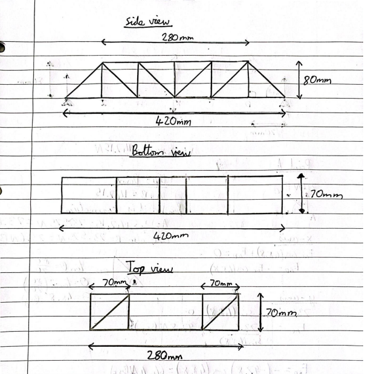
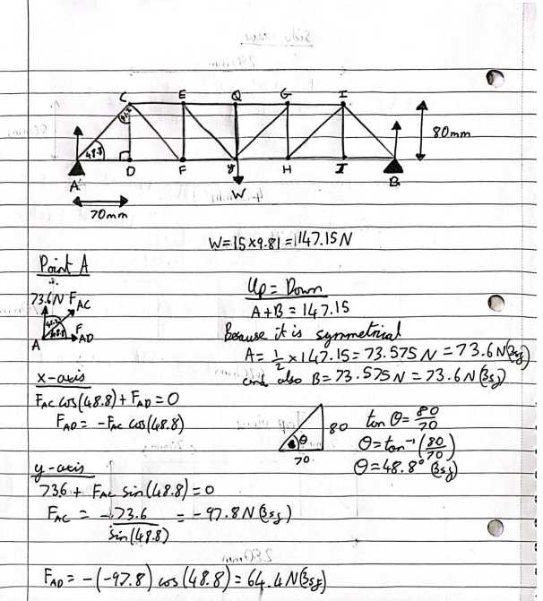
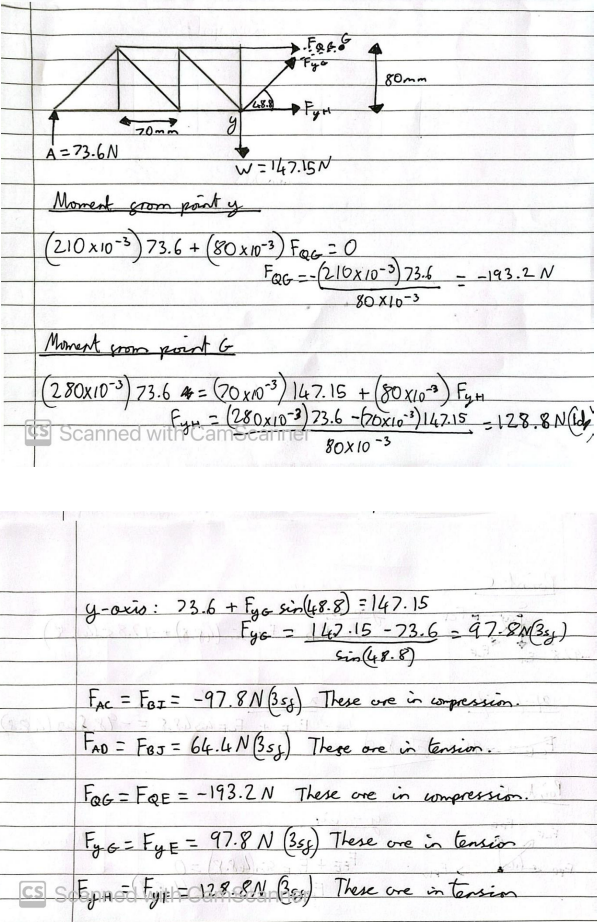
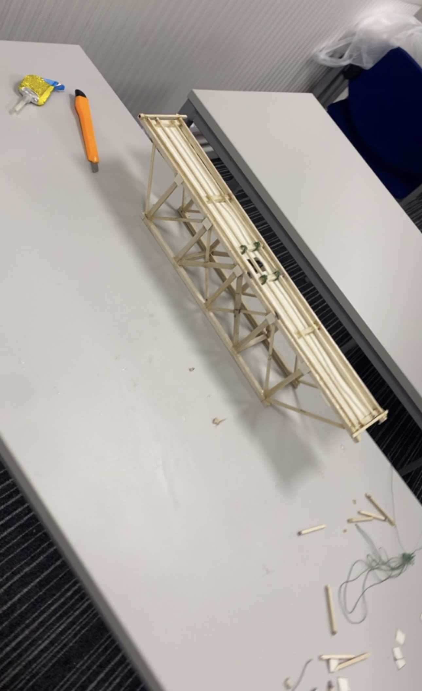
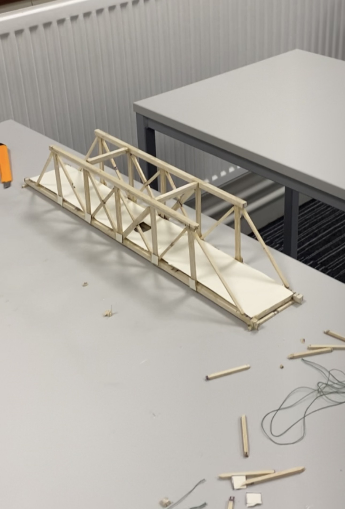
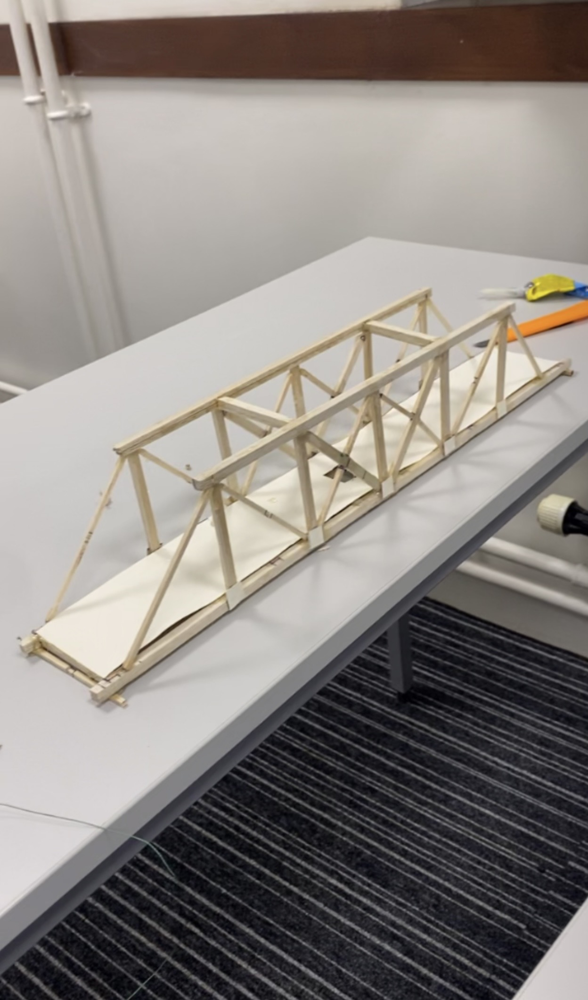
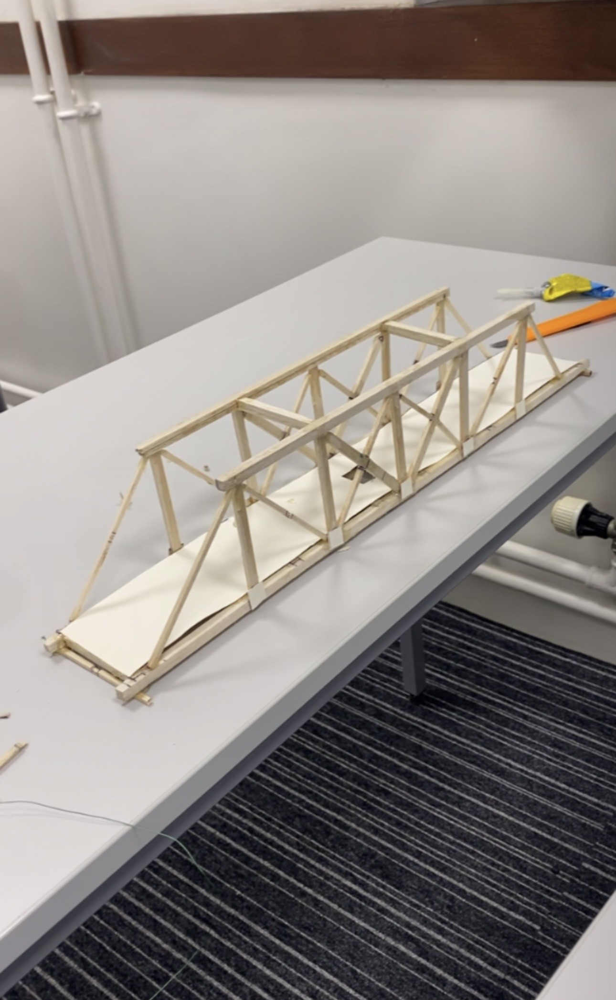

Group design-and-build project to maximise load-to-weight ratio within fixed material and geometry constraints. Member forces determined analytically by method of joints before fabrication, then experimentally validated by incremental load testing to failure.






